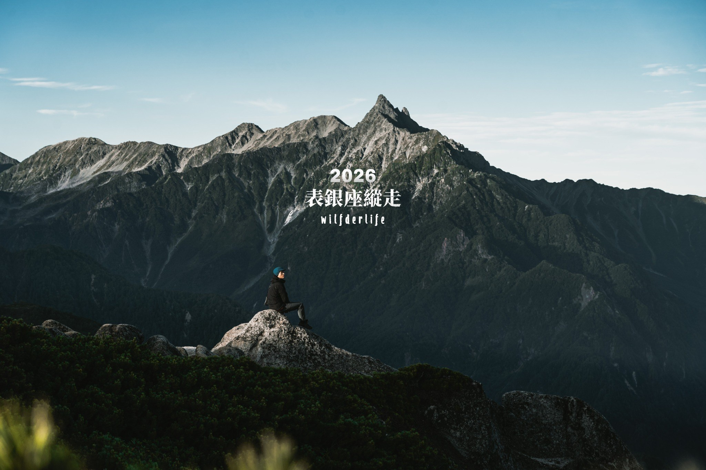
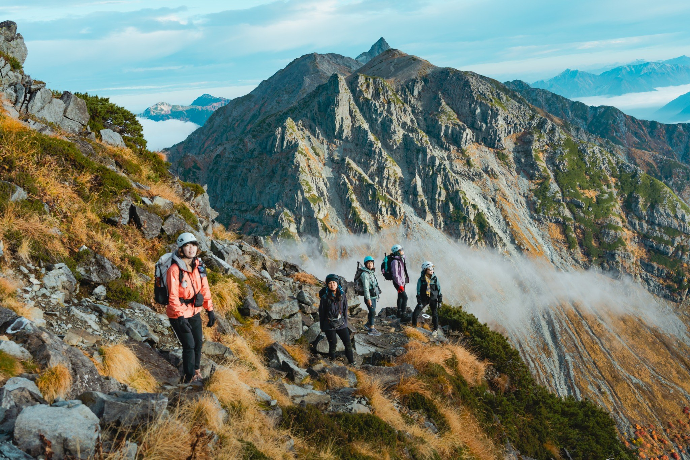
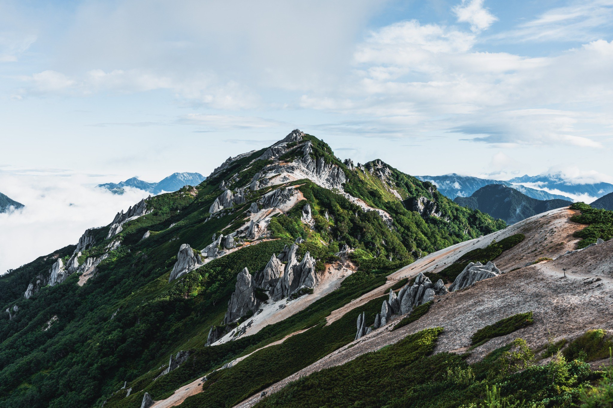
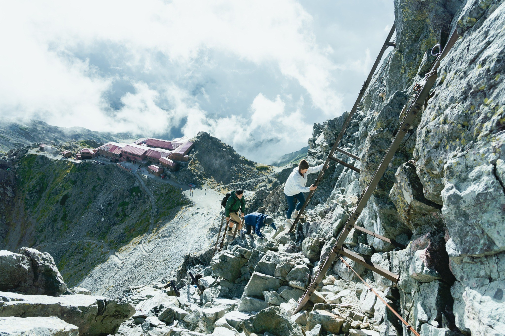
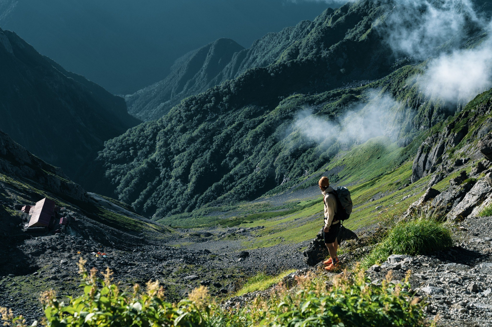
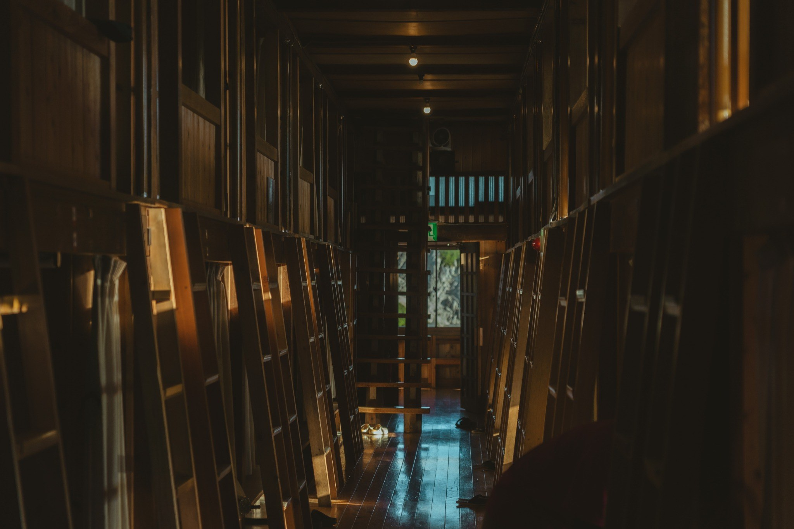
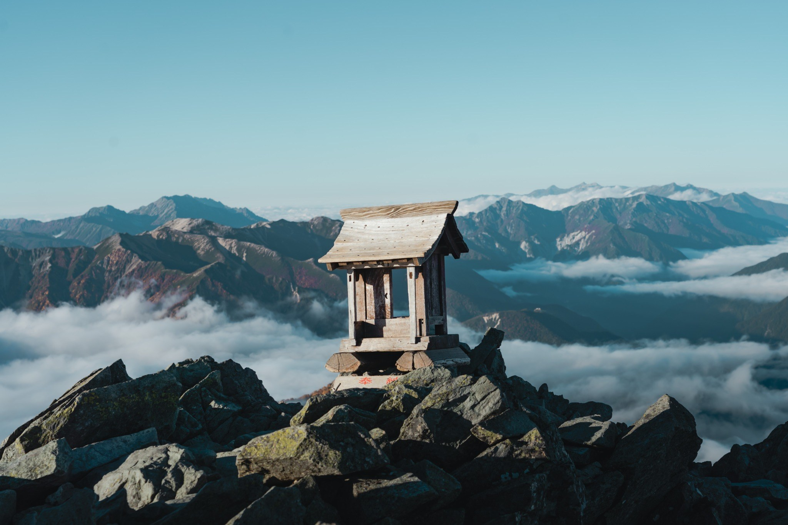

DAY 1｜07/26 松本 → 中房溫泉 → 燕山莊
最大爬升日06:30
松本車站集合
07:00
搭乘 JR 前往穗高站 預計 07:15 抵達穗高站
08:25
搭乘接駁車前往中房溫泉
09:30
起登
10:00
燕岳登山口
12:00
合戰小屋 午餐自理
14:00
燕山莊 山屋供晚餐

表銀座不是一般觀光健行。四天三夜需要連續行走、背負個人裝備、適應山屋生活，並面對高山強風、午後雷雨、低溫與長距離下坡。
請在出發前完成體能訓練與裝備確認。若身體狀況、裝備或行程理解有疑問，請提早與領隊聯繫，不要到出發當天才提出。

請先理解整體節奏：第一天大爬升、第二天長稜線、第三天岩稜與槍岳、第四天長距離下坡。真正的難點不是單一天，而是連續四天的體力累積。
最大爬升日，先穩定節奏，不要一開始衝太快。
燕岳與大天井岳稜線日，午餐自理，住宿大天莊。
行程較長，通過西岳小屋與大槍山屋後抵達槍岳山莊，依天候決定是否攻頂。
下坡距離長，膝蓋、腳踝與注意力是重點。
以下時間為預估行程時間，山區實際行進會依天候、路況、團員狀況與交通接駁調整。請以領隊當日宣布為準。
第一天從登山口一路爬升至燕山莊，是全程體感最累的一天。請用能說話的速度行走，避免一開始心率過高。

表銀座最經典的稜線日。景色開闊，但暴露在稜線上的時間也長，防曬、防風與穩定補水都很重要。
今日路程較長，會經過西岳小屋與大槍山屋後抵達槍岳山莊。槍岳最後登頂段需手腳並用，請遵守三點不動原則，不急、不超車、不拍危險照片。

最後一天雖然主要是下坡，但距離長、疲勞累積高，是最容易跌倒或膝蓋不舒服的一天。請提早使用登山杖，保持穩定步伐。

每週至少一次 4–8 小時健行，或每週 2–3 次跑步／爬坡訓練。登山鞋開始磨合。
雨衣雨褲、羽絨、頭燈、登山杖、背包、登山鞋全部確認。不要帶全新未使用裝備。
確認海外旅平險、醫療險與登山相關保障。若有感冒、受傷或長期服藥請主動告知。
行動電源充滿、頭燈測試、護照與現金確認。前一晚不要熬夜或飲酒。
建議背包總重控制在男性 10kg 內、女性 8kg 內。不要把「可能會用到」的東西都帶上山，真正重要的是保暖、防水、照明與個人藥品。
日本山屋多為多人通鋪，空間有限，請把它當作共同生活空間，而不是旅館。抵達後請快速整理裝備、配合用餐時間與熄燈時間。

夜間避免大聲聊天與外放音樂，整理塑膠袋與裝備請降低音量。
晚餐、早餐與熄燈時間固定，請準時集合，不影響山屋與其他山友。
垃圾自行背下山，公共空間不要攤開個人物品，保持通道暢通。
領隊會依照天候、路況、團員狀況調整節奏與行程。請不要單獨行動，不要超過指定位置，身體不舒服請立即告知。

請在出發前完成體能、裝備、保險與健康狀況確認。這趟旅程不只是走完路線，而是一起安全地走進北阿爾卑斯。